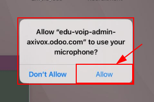
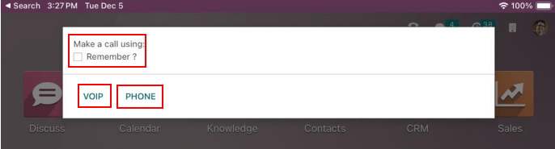

Dispositivos e integraciones¶
La VoIP se puede utilizar en muchos dispositivos distintos, como computadoras, tabletas, celulares y otros. Es muy útil, pues reduce los costos y permite que los empleados trabajen desde cualquier lugar del mundo siempre y cuando cuenten con una conexión de internet de banda ancha.
La VoIP de Odoo es compatible con el SIP (también conocido como protocolo de inicio de sesión), así que se puede utilizar con cualquier aplicación compatible con SIP.
Este documento incluye el proceso para configurar la VoIP de Odoo en diferentes dispositivos e integraciones.
Todas las aplicaciones de Odoo están integradas entre sí, lo que permite que los usuarios hagan clic en cualquier aplicación y programen una llamada como una actividad en el chatter.
Example
Por ejemplo, en la aplicación CRM, un usuario puede hacer clic en una oportunidad y luego en Actividades en el chatter.
A continuación, el usuario puede elegir Llamada y seleccionar una fecha en el campo Fecha de vencimiento.
La actividad aparece en el chatter una vez que hace clic en Guardar.
Si la fecha de vencimiento es la fecha de hoy, la actividad aparecerá en el widget de VoIP.

VoIP de Odoo en computadoras portátiles o de escritorio¶
El módulo y el widget VoIP (Voz sobre protocolo de internet) de Odoo se pueden utilizar desde cualquier navegador en una computadora portátil o de escritorio. Solo haga clic en el icono ☎️ (teléfono) ubicado en la esquina superior derecha mientras se encuentre en su base de datos de Odoo, así aparecerá el widget.
Ver también
Para obtener más información sobre el uso del widget de VoIP en una computadora de escritorio o portátil, consulte la siguiente documentación: Widget de VoIP.
VoIP de Odoo en dispositivos móviles y tabletas¶
La aplicación VoIP de Odoo se puede utilizar en tabletas y teléfonos móviles a través de las aplicaciones de Odoo para Android o Apple iOS. También se puede utilizar un navegador web móvil para acceder a la base de datos.
Advertencia
La aplicación de Odoo para Android y Apple iOS ya no recibe mantenimiento por parte de Odoo en los portales de Android y Apple, lo que significa que nuestro equipo de soporte solo se encarga de un alcance limitado en los tickets que reciben sobre Odoo en Android o en Apple iOS.
Importante
Aunque se pueden realizar llamadas salientes con Odoo desde un dispositivo móvil, tenga en cuenta que Odoo no es una aplicación completa de VoIP y no suena al recibir llamadas. Si el usuario necesita estar disponible desde un dispositivo móvil en todo momento, entonces debería usar una aplicación como Zoiper. Aplicaciones similares a esa permanecen conectadas en segundo plano en todo momento.
Consulte la documentación de Zoiper Lite para obtener más información.
Para acceder al widget de VoIP de Odoo desde un dispositivo móvil o tableta debe tocar el icono ☎️ (teléfono) ubicado en la esquina superior derecha. El widget aparecerá en la esquina inferior izquierda.
Cuando un usuario realiza una llamada desde una tableta a través la aplicación móvil, se le solicita permiso para que la base de datos utilice el micrófono. Haga clic en Permitir para continuar con la llamada y poder utilizar el micrófono.
Este paso es necesario, no importa si está utilizando la aplicación móvil de Odoo o un navegador web.
Después, Odoo le preguntará cómo realizar la llamada. Las dos opciones disponibles son VoIP o Teléfono (en caso de que la tableta este habilitada para realizar y recibir llamadas). Seleccione la casilla junto a Recordar si desea que esta decisión sea la que se use de forma predeterminada después.
La aplicación VoIP de Odoo se ve de la siguiente forma en un dispositivo móvil:

Zoiper Lite¶
Zoiper Lite es un softphone gratuito de VoIP y SIP que cuenta con funciones de voz y video.
Para comenzar a usar la aplicación Zoiper deberá descargarla en el dispositivo desde la página de descarga de Zoiper.
La instalación más común se realiza en dispositivos móviles y este documento menciona cómo configurar la aplicación Zoiper en iOS. Las capturas de pantalla y los pasos pueden variar según las condiciones de configuración.
Después de instalar la aplicación Zoiper en el celular, ábrala y presione Ajustes. Vaya a y toque el icono + (más) para agregar una.
Si la cuenta de VoIP ya está configurada, entonces haga clic en Sí. Esto indica que ya cuenta con un nombre de usuario y una contraseña para la cuenta.
Presione Selecciona un proveedor y en la pantalla que aparece toque País, allí presione en la esquina superior derecha para reducir la lista de proveedores a un país específico. Elija el país del proveedor que está configurando, búsquelo y selecciónelo.
Example
Si el proveedor que está configurando es Axivox, seleccione Bélgica y luego elija Axivox.

Ingrese el nombre de la cuenta, dominio, nombre de usuario y contraseña en las opciones del SIP. Toda esta información varía según la cuenta.
Truco
Para acceder a esta información desde el portal de Axivox, vaya a . El Nombre de usuario SIP, Dominio, Contraseña SIP y Dirección del servidor proxy se encuentran en esta pestaña.
Campo de Zoiper |
Campo de Avivox |
|---|---|
Nombre de cuenta |
Puede ser cualquiera |
Dominio |
Dominio |
Nombre de usuario |
Nombre de usuario SIP |
Contraseña |
Contraseña SIP |
Una vez que haya ingresado esta información de la cuenta, haga clic en el botón verde Registrar ubicado en la parte superior de la pantalla. Una vez que se verifique la información de registro, Zoiper mostrará un mensaje que indica Estado de registro: OK.
En este punto, Zoiper está configurado para realizar llamadas telefónicas a través del servicio de VoIP.
Linphone¶
Linphone es un softphone de VoIP y SIP de código abierto. Se utiliza para llamadas de voz y video, mensajería (grupal e individual), así como para conferencias telefónicas.
Para comenzar a usar la aplicación Linphone, descárguela en el dispositivo desde la página de descarga de Linphone.
La instalación más común se realiza en dispositivos móviles y este documento menciona cómo configurar la aplicación Linphone en iOS. Las capturas de pantalla y los pasos pueden variar según las circunstancias.
Para comenzar a configurar Linphone para su uso con un proveedor de SIP primero deberá abrir la aplicación, aparecerá una pantalla de asistente.
En esta pantalla seleccione Usar cuenta SIP. Luego, en la siguiente pantalla, escriba el nombre de usuario, contraseña, dominio y nombre para mostrar. Una vez que haya terminado, presione Iniciar sesión.
En ese momento Linphone está listo para realizar llamadas. Debe aparecer un botón verde en la parte superior de la pantalla de la aplicación con el texto Conectado.
Truco
Linphone ofrece una variedad de aplicaciones para dispositivos móviles y de escritorio en sistemas operativos como Windows, Linux, Apple y Android. Además, como Linphone es un proyecto de código abierto, con frecuencia hay nuevas actualizaciones.
Consulte la página de documentación wiki de Linphone.